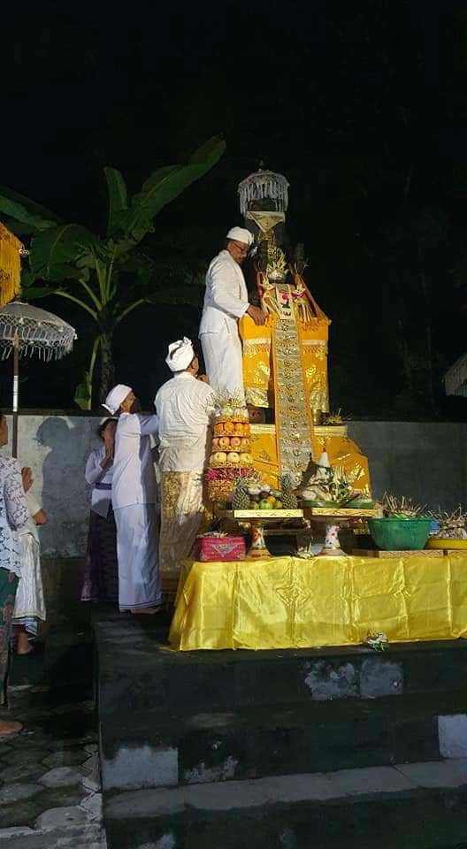
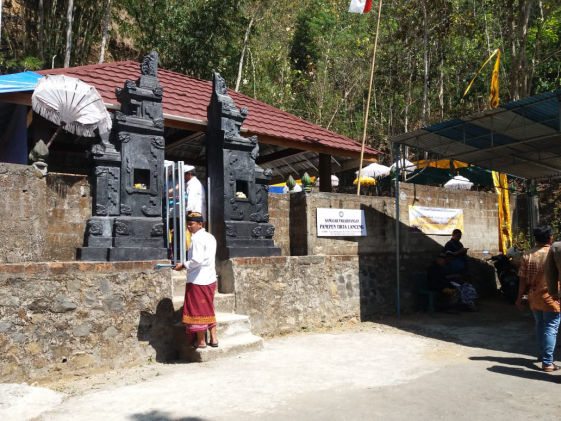
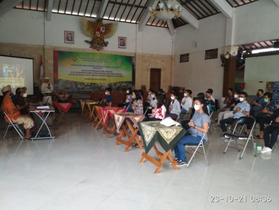
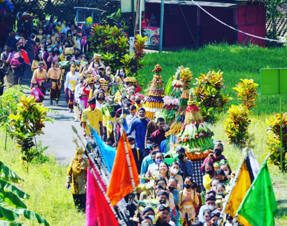

Umat Hindu Se Daerah Istimewa Yogyakarta (DIY) melaksanakan Upacara Melasti di Pantai Parangkusumo Kretek Bantul.

Kegiatan PHDI Sleman
Pawedalan atau Pujawali Pura. Piodalan merupakan rangkaian upacara Dewa Yadnya yang ditujukan pada Ida Sanghyang Widi Wasa disebuah Pura atau tempat Suci Agama Hindu.

Kegiatan PHDI Kulon Progo
Persembahyangan bersama umat Hindu dengan Penganut Aliran Kepercayaan di wilayah Desa Sidoharjo Samigaluh dalam rangka Pengetan Sanggar Parahiyangan Panepen Tirto Lanceng.

Kegiatan PHDI Yogyakarta
PHDI Kota Yogyakarta melakukan kegiatan pembinaan yang menyasar generasi muda Hindu dari tingkat SLTA sampai dengan Mahasiswa dan muda mudi belum menikah di wilayah kota Yogyakarta dengan tema pendidikan Pra Nikah.

Kegiatan PHDI Gunung Kidul
Prosesi upacara wanakerti dimulai dengan iring-iringan sesaji dari situs petilasan eyang ageng roro resmi menuju lokasi upacara di kaki bukit hutan adat wonosadi yang merupakan situs pertapaan eyang ageng onggoloco trah Prabu Brawijaya V.